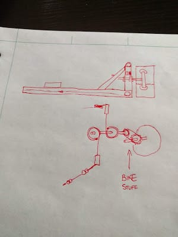
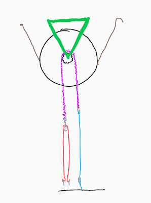
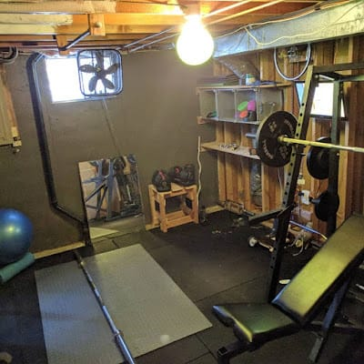
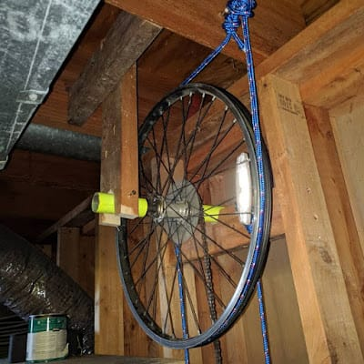
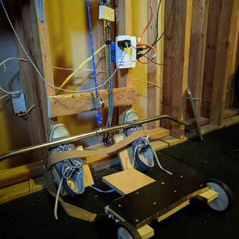
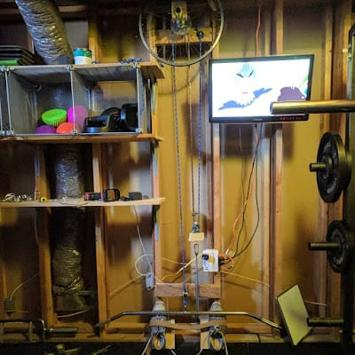
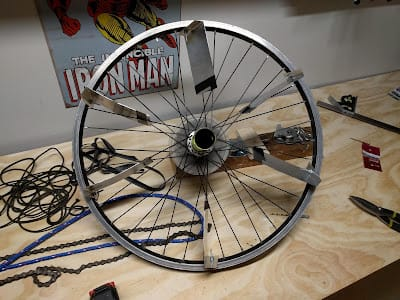
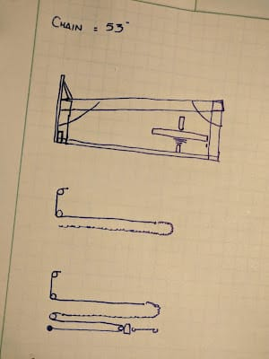
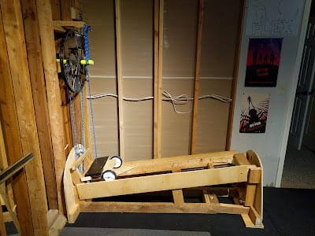
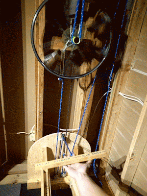

Motto: Everybody Needs a Hobby
I have put a lot of the three major resources into crafting a home gym. I’m proud of it and it’s one my favorite things about my house… but it doesn’t have any way to do cardio. Your standard fix to this is “buy a treadmill off Craigslist”. My issue is, I’ve got crap joints and treadmills historically cause me problems after a couple of minutes. Also treadmills are large and generally not something I’ve ever been excited about. In my experience, rowing for a couple minutes is a better warm up than jogging, and a rowing machine tends to hold its value. Because rowing machines hold their value, any one that’s used and worth buying is incredibly expensive. That link isn’t to a specific example, it’s just a search of Rowing Machines in the KC area. I assume at any given point in the future you’ll be able to click it and see I’m right.
So, they’re expensive, but they’re also simple. A rowing machine is basically a seat with wheels & rope that offers some resistance when you pull it, then retracts back to let you pull it again. How hard could it be to make that? Why are they so expensive?
Thus, for the past 8 months I’ve wanted to and tried (with varying levels of success) to build a rowing machine. My workouts have been missing a cardio component, not warming up properly has caused me to hurt myself on two separate occasions. I’ve got an engineering degree. I’m a problem solver. This is a solvable problem.
Thus begins the Parable of the Rowing Machine.
In my Life Tracker I first wrote that I “made rough plans for a rowing machine” on December 10th of last year.
 |
|---|
| From my Google Photos - 12/10/2017 |
{kind=link}
That was 8 months ago. It’s been mentioned 18 times since then.
In order to get out of the hypothetical realm, I bought a bike from Goodwill. It was later that I found out that children’s bicycles function differently than adult bicycles. Turns out when you pedal a kid’s bike backwards it functions as a brake. Net result, when the rope started to retract, it just seized up entirely.
So. I bought a second bike from a second Goodwill.
Once I had to settle for a bigger bike wheel, I gave up on submersing the bike wheel into water. Given that water wasn’t a possibility, I went with a friction-based dampener.
 |
|---|
| Hastily drawn on my Chromebook |
{kind=link}
A couple days later, I had Rowing Machine Mark 1 up and functional.
 |
|---|
| The gym as it was then. Notice the bike wheel at the top-right of the picture. |
{kind=link}
 |
|---|
| Rope for dampening. |
{kind=link}
 |
|---|
| Foot straps. Old Chuck Taylors. Boom. |
{kind=link}
 |
|---|
| Rowing Machine. Revision 0. |
{kind=link}
That worked okay.
Until it broke.
Turns out ropes like that aren’t meant to be used for friction. Also it turns out that the best name in Rowing Machines “Concept 2” uses an air-based dampening system. Air is fluid. Water’s a fluid. Fluid dynamics work. Basically I needed to turn my bike wheel into a bike wheel fan.
 |
|---|
| Bike wheel fan. |
{kind=link}
I wanted to put that fan to use to blow air on me. I wanted a self-contained unit. I wanted something that looked cooler.
 |
|---|
| Looks good, yes? |
{kind=link}
That turned into this.
{kind=link}
{kind=link}
{kind=link}
It was at that time that I found out that I broke my bike wheel. So there came a need for bike #3.
{kind=link}
Turned out, though, that the bike wheel being parallel with the ground cause the chain to slip off the teeth of the freewheel. Also - the bungee cord-based rope retraction system was limiting the stroke length of the row. So - I abandoned the self-contained, bungee-cord-based system. Built it back into the wall. Fan wheels. Weights for retraction. AAAAAAAAAAAAAND
 |
|---|
| Rowing Machine. Revision 1. |
{kind=link}
It technically works.
 |
|---|
| Not shown - the worlds loudest squeaks. |
{kind=link}
That leaves the gym looking like this:
{kind=link}
{kind=link}
{kind=link}
{kind=link}
So. All told…
3 Bikes. 22
2 Bungies Cords. 8
4 I Bolts. 3
1 Sheet Aluminium. 8
All my spare wood.
A valuable corner in the gym.
Probably at least 36 hours of work.
$130 + opportunity cost of that spare wood + the space in the gym that used to be a free corner.
I’m probably going to tear it apart.
Top 5: Morals of this Story
5. If I think of it, I can actually build it.
4. If I can think of it and build it, it won’t necessarily work like I want it to.
3. DIY doesn’t necessarily mean cheap.
2. Before spending a lot of resources on a project, ensure you’ve got a place for it.
1. Maybe just buy a pre-built thing.
Quote:
“I wanted to cry and burn it all down.”
- me, at one point -